When you think of Egypt, towering pyramids, golden deserts and stories of ancient pharaohs probably spring to mind — and for good reason. Egypt is one of the oldest civilisations in the world, dating back more than 5,000 years. From the iconic Sphinx of Giza to the bustling streets of Cairo, it's a place where ancient history and modern life intertwine in the most fascinating ways. Whether you're into archaeology, adventure, or simply want to cruise the Nile with a cocktail in hand, Egypt offers something truly unique.
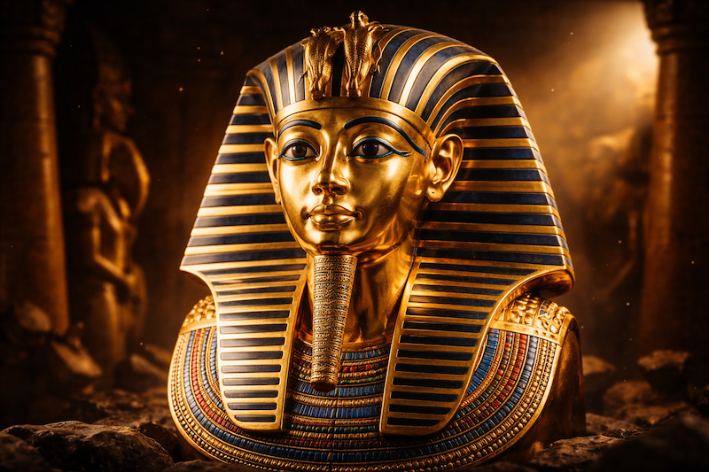
While the Pyramids of Giza are world-famous, Egypt is home to over 130 pyramids — many in places you've probably never heard of, like Dahshur and Saqqara.
Ancient Egyptians invented one of the earliest known calendars based on moon cycles and the Nile. Their year had 365 days — just like ours.
In ancient Egypt, women could own property, initiate divorce and run businesses. Some even ruled as Pharaohs — like Hatshepsut and Cleopatra.
Egyptians didn't just like cats — they worshipped them. Killing a cat, even accidentally, could be punishable by death in ancient times.
With more than 20 million residents, Cairo is not only Egypt's capital but also one of the largest cities in Africa and the Middle East.
The Red Sea offers some of the world's clearest waters and richest coral reefs. Sharm El Sheikh and Hurghada are favourites for divers and snorkellers.
Egypt's highlights span thousands of years of history across an enormous country. Here's a curated look at the unmissable stops — many of which we visited ourselves. For a full list, check out TripAdvisor's Things to Do in Egypt.
Egypt was one of those dream destinations we'd always talked about — but we didn't want to wait until we had thousands to spare. So we planned smart and travelled even smarter. From pyramids to the Red Sea, here's exactly how we did it.
We travelled from the north of Egypt (Cairo) all the way south to Luxor, then down to Abu Simbel before heading to Hurghada on the Red Sea coast.
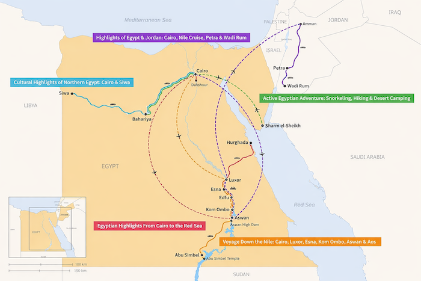
Our route through Egypt — Cairo → Aswan → Abu Simbel → Luxor → Hurghada
Our adventure began with an early British Airways flight from London to Cairo. We checked into the New Start Zamalek Hotel — an elegant, modern area full of cafés, restaurants and local entertainment, all easily walkable.
Landing into Cairo — the city stretches endlessly into the hazy sunset
A private day tour covering the Pyramids of Giza, the Great Sphinx, Memphis and Saqqara. Entry to all attractions was included, along with bottled water and drop-off at the hotel.
The Giza Pyramids — including the Great Pyramid, Pyramid of Khafre and Pyramid of Menkaure — are the oldest of the Seven Wonders of the Ancient World and the only one still standing. Awe-inspiring doesn't begin to cover it.
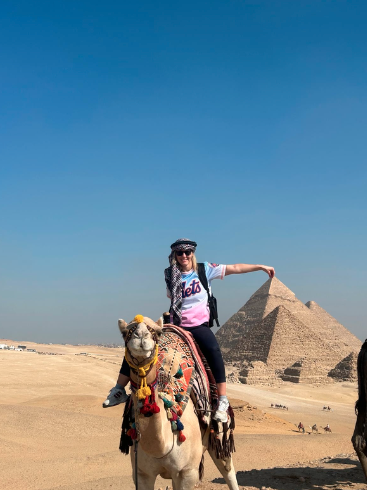
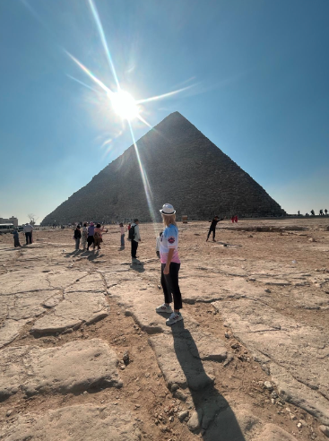
Riding a camel is an optional experience well worth doing — around $10–$15 per person (cash only, unless booked via Viator). Bring $1–3 for tips for whoever takes your photos.
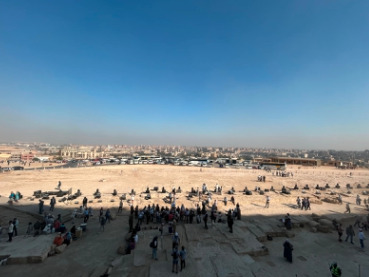
The scale of the Giza complex only hits you when you see the crowds below
The Great Sphinx measures 73m long and 20m high — built around 2558–2532 BC, believed to represent the pharaoh Khafre. Seeing it in person is genuinely humbling.
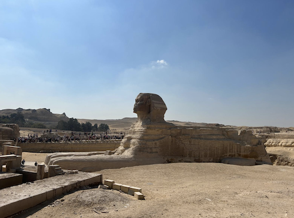
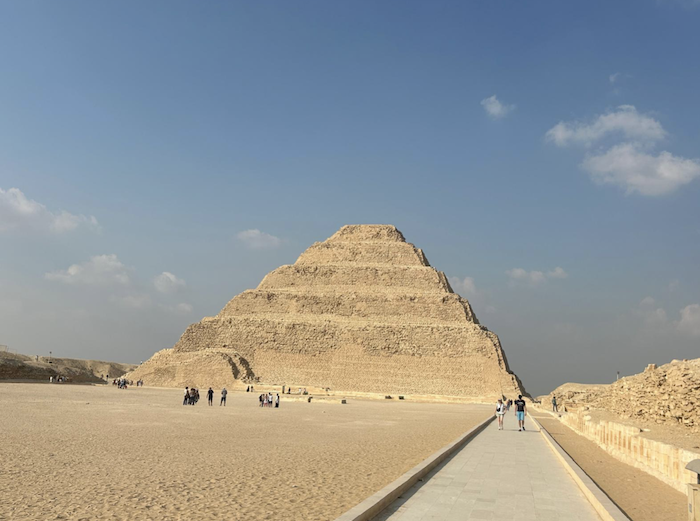
The National Museum of Egyptian Civilisation houses the oldest prosthetic toe in the world, a 30,000-year-old skeleton and — most memorably — the royal mummies, moved here in a spectacular parade. No photography allowed inside, but the experience is unforgettable.
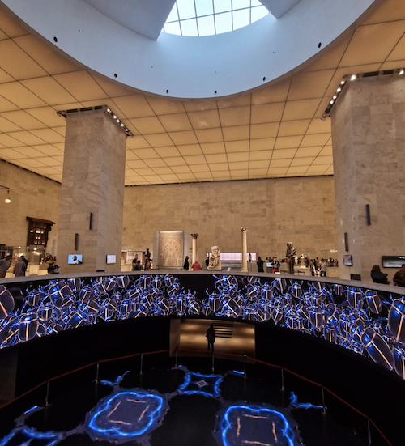
The Cairo Citadel is home to the breathtaking Mohamed Ali Mosque (also called the Alabaster Mosque) — commissioned between 1830 and 1848, its alabaster-covered walls and sweeping views over the city are extraordinary.
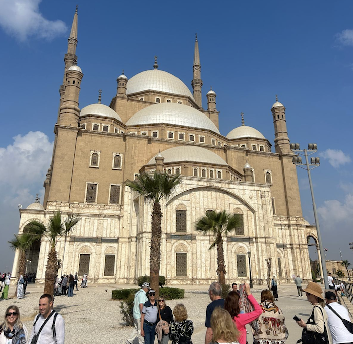
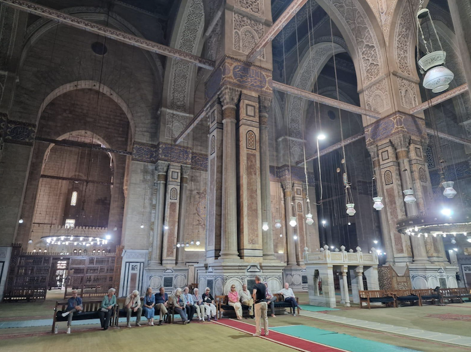
Old Cairo (Coptic Cairo) is an absolute must-see — one of the most important locations visited by the Holy Family. Visit the Church of Abu Serga, the Hanging Church and the ancient Ben Ezra Synagogue.
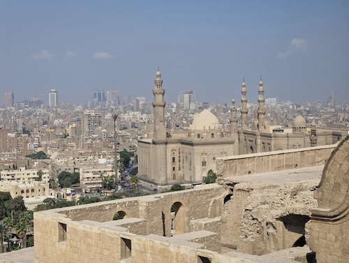
A guided walk through some of Cairo's most stunning Islamic architecture — the Al-Rifa'i Mosque, the enormous Mosque-Madrasa of Sultan Hassan (built 1356), the revered Al-Azhar Mosque (founded 970 AD) and the Al-Emam Al-Hussein Mosque.
We finished at Khan Al-Khalili market — worth a stroll for the atmosphere, though we found better quality souvenirs elsewhere in the country.
We stored our luggage at Madina Hostel while waiting for our evening Egypt Air flight to Aswan. The Obelisk Nile Hotel had one of the most spectacular Nile views we've ever seen.
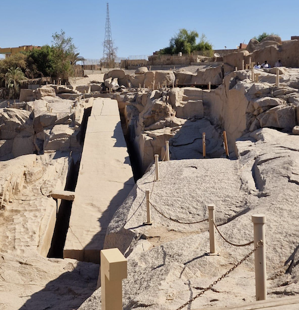
This was our one big splurge — and it was worth every penny. The cruise included all meals, accommodation in a private cabin and guided visits to ancient temples with a trained Egyptologist.
We visited the Unfinished Obelisk (which would have been the largest ever carved), the magical Philae Temple accessible only by boat, and the Aswan High Dam — the largest dam on the world's longest river, completed in 1971.
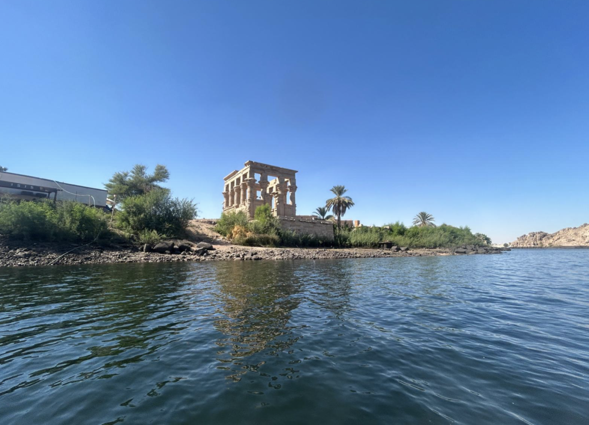
An optional early morning excursion — and absolutely worth it. A 3.5-hour drive through the Nubian Desert (with a coffee break) takes you to the very south of Egypt, near the Sudanese border.
Abu Simbel features two stunning temples — the Temple of Ramesses II and the Temple of Queen Nefertari — considered masterpieces of ancient Egypt. The colossal statues (20 metres high) flanking the entrance are jaw-dropping.
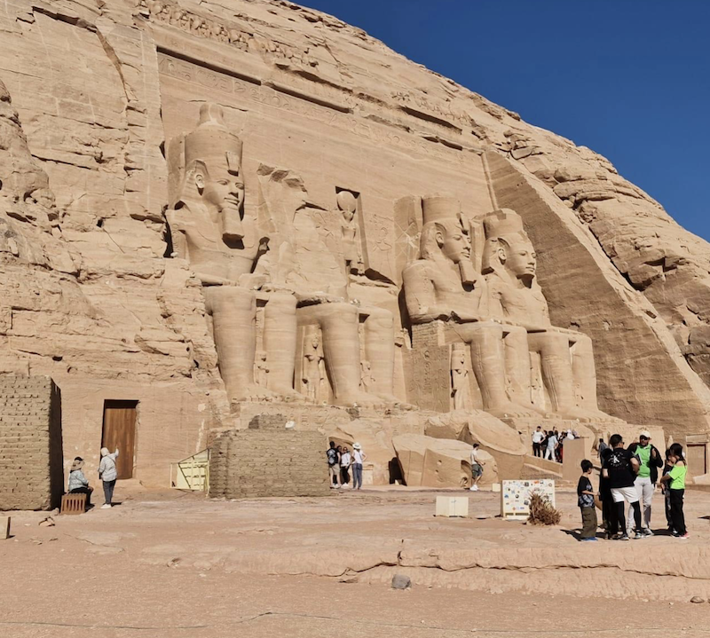
In the late afternoon, we stopped at the Temple of Kom Ombo to watch the sunset — a beautifully preserved double temple dedicated to two gods: Sobek the crocodile and Haroeris the falcon.
The final day of the cruise took us through three of Egypt's most iconic temples. The Temple of Horus at Edfu is one of the best-preserved in Egypt. The vast Karnak complex — with its grand avenue of sphinxes, colossal columns and sacred lake — is simply breathtaking. We ended at the magnificent Luxor Temple, built by the great pharaohs and dedicated to the sun god Amun Re.
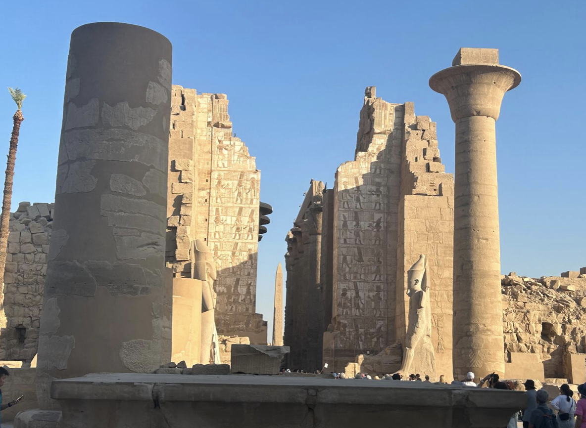
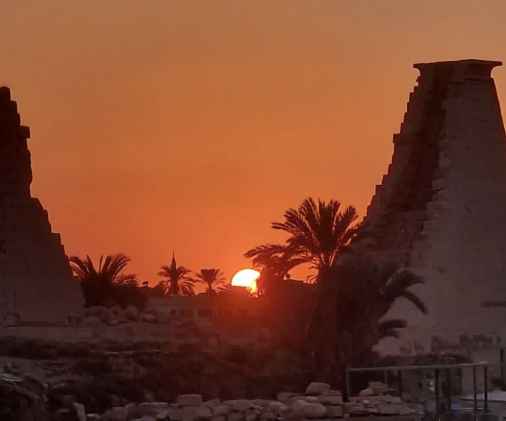
We were picked up at 6am to catch the sunrise — and no photograph does it justice. Floating over the Valley of the Kings as the sun rose over the desert was one of the most extraordinary moments of our lives. Each balloon basket holds around 25 people.
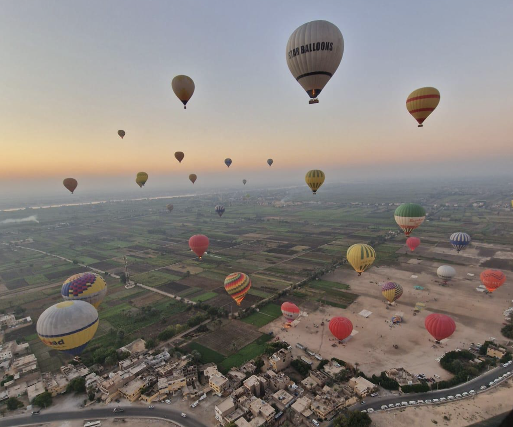
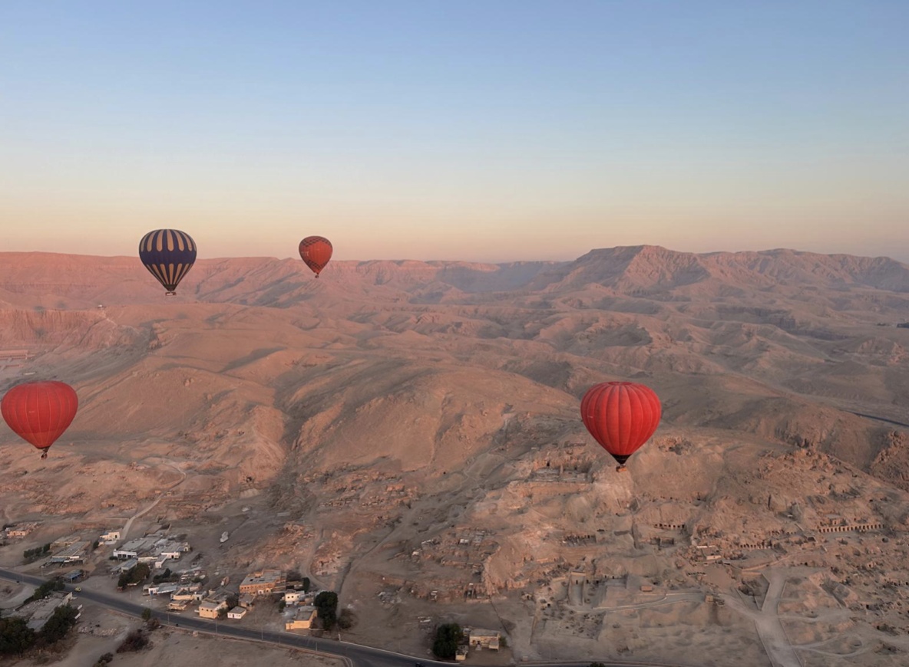
After landing, we visited the Valley of the Kings — tombs of the pharaohs with remarkably well-preserved wall paintings. Tutankhamun's tomb requires an additional $10 entry fee but is absolutely worth it.
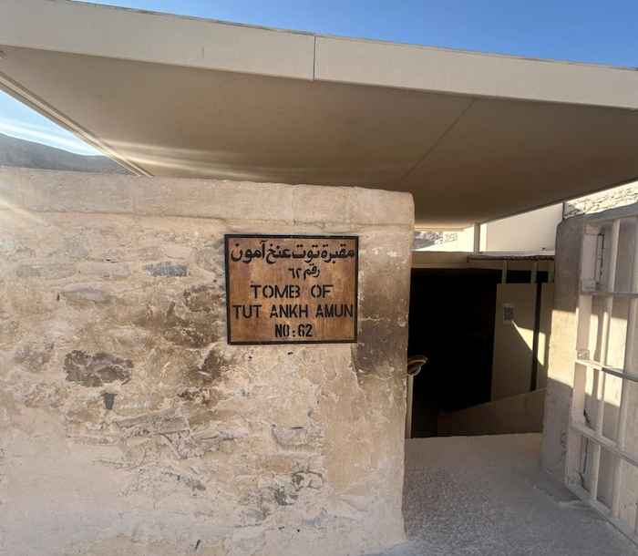
We also visited the stunning Temple of Hatshepsut — a unique terraced mortuary temple built into the cliffs of Deir el-Bahari, dedicated to the only female pharaoh who ruled Egypt alone for 20 years.
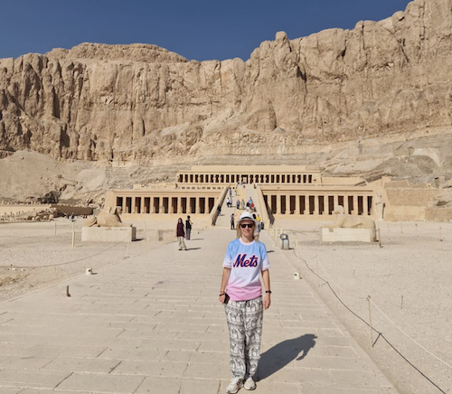
After three nights in Luxor at the Pavilion Winter Hotel ($80pp/night), we took a private transfer to Hurghada and spent our final days completely recharging — beach, snorkelling, unlimited food and the clearest water imaginable. Our return flight to London via EasyJet cost around $100.
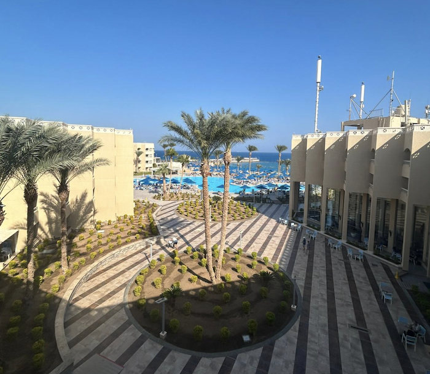
Use the same tools we used — book tours, find accommodation and get cashback on everything you spend.
🎟️ Book Tours via Viator 🏨 Find Hotels on Booking.com